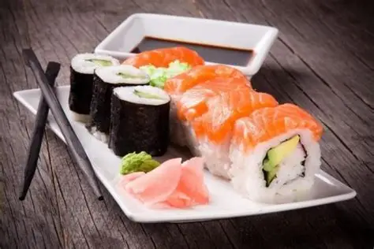
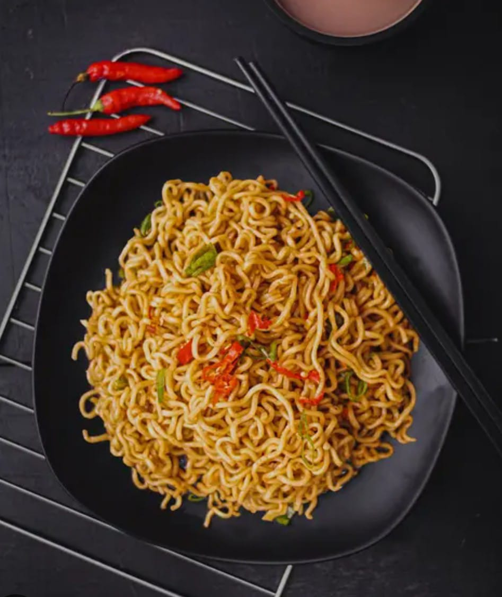

Makanan Favorit Saya
Setiap makanan punya cerita sendiri. Mari lihat 3 makanan favorit saya ✨🍜🍔🍰

Sushi
Kombinasi rasa lembut dan segar, dengan tekstur nasi yang pulen, potongan ikan yang meleleh di mulut, serta sentuhan gurih ringan dari soy sauce dan sedikit pedas dari wasabi.

Nasi Goreng
dengan bumbu khas yang sangat harum.

Mie
kombinasi rasa umami,tekstur kenyal dan kekayaan bumbu yang menggoda